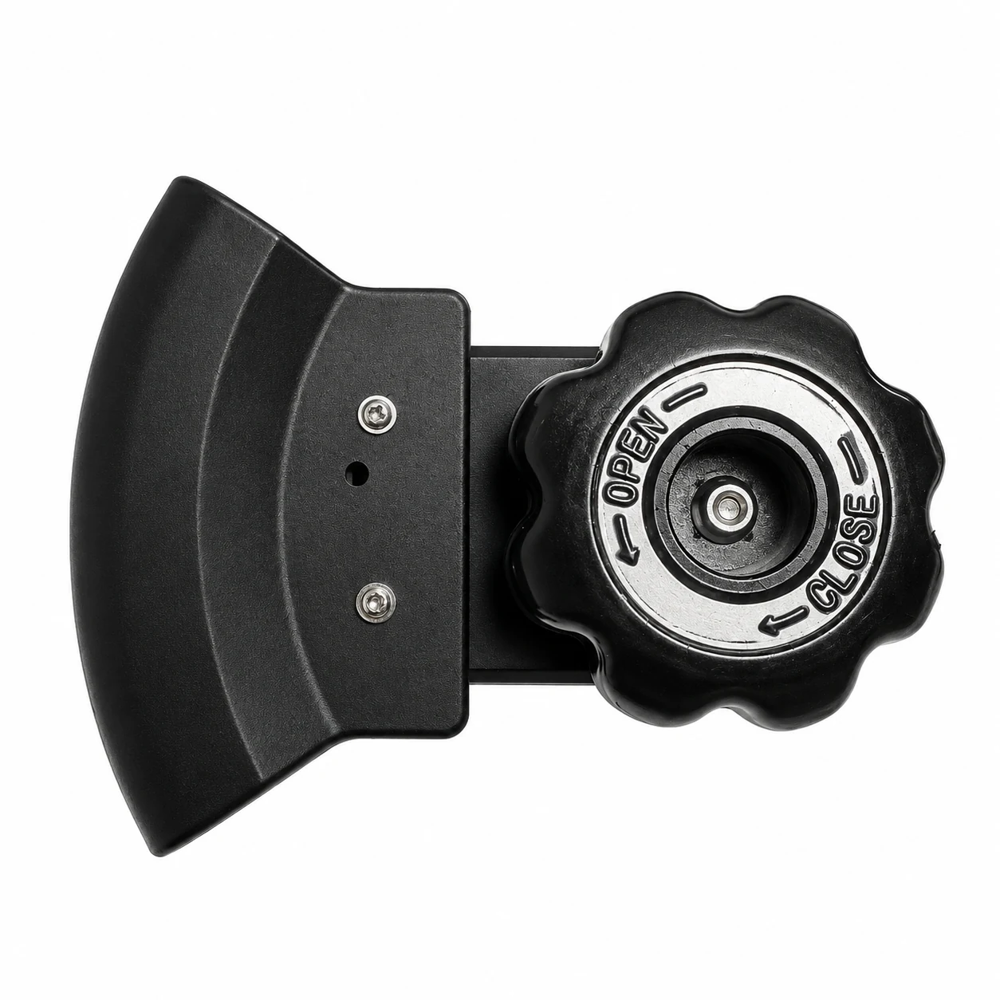
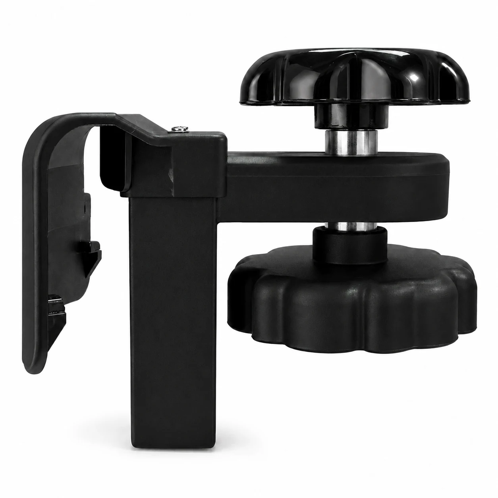
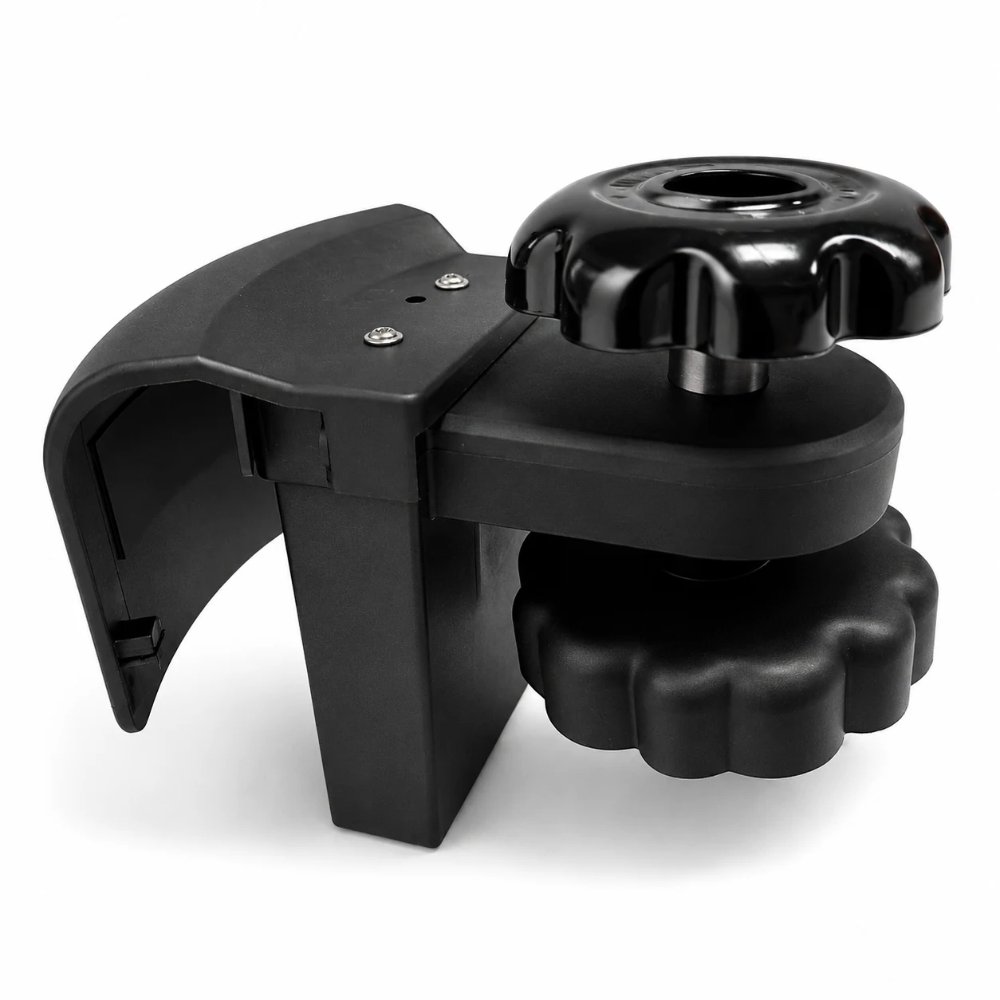
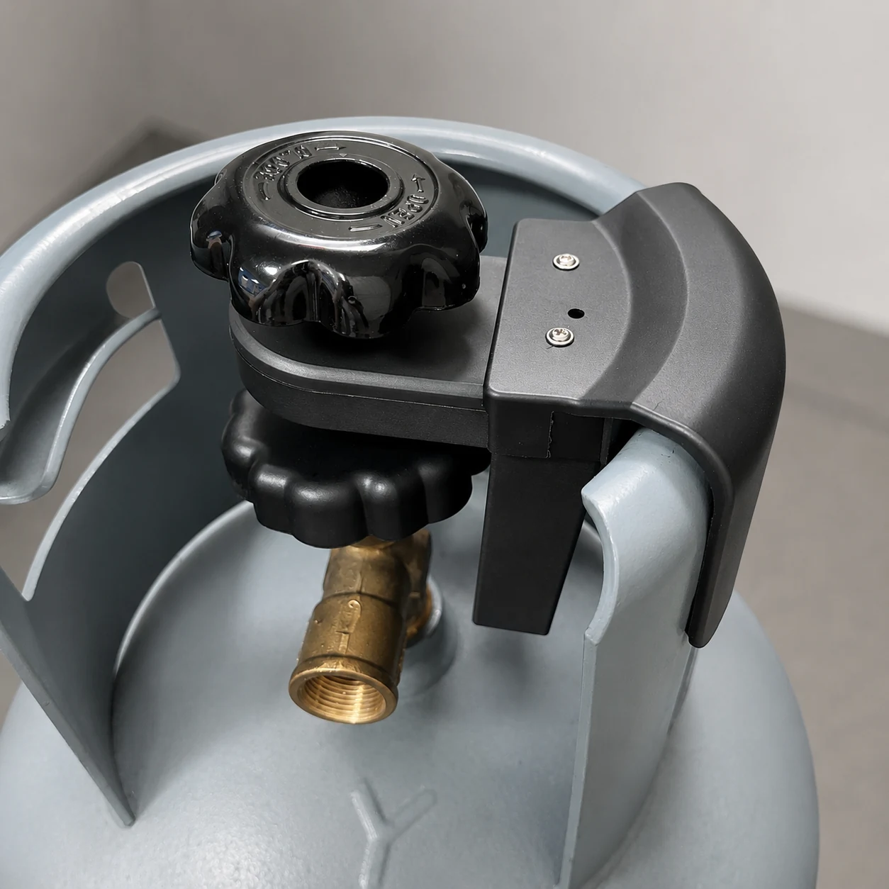

Patent Application
基于智能算法的与电磁阀联动式燃气泄漏报警装置｜发明专利申请
参与发明专利申请前期方案表达，负责产品结构策划与三维建模，围绕报警主体、电磁阀联动、状态反馈与安装识别进行结构差异化表达，使方案区别于市面同类结构产品，支撑专利申请材料与产品方案展示。





Patent Application
参与发明专利申请前期方案表达，负责产品结构策划与三维建模，围绕报警主体、电磁阀联动、状态反馈与安装识别进行结构差异化表达，使方案区别于市面同类结构产品，支撑专利申请材料与产品方案展示。



